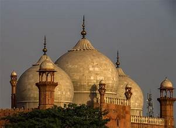
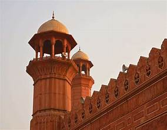
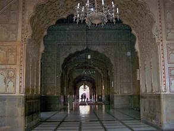
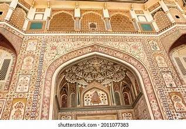

Badshahi Mosque
A Mughal Masterpiece in Lahore in a clear, bold font.
A Mughal Masterpiece in Lahore in a clear, bold font.
The Badshahi Mosque, located in Lahore, Pakistan, is one of the largest and most iconic mosques in the world. Built in 1673 by the Mughal Emperor Aurangzeb, it stands as a masterpiece of Mughal architecture, reflecting grandeur, balance, and intricate artistry. The mosque has historically served not only as a place of worship but also as a symbol of the Mughal Empire’s cultural and spiritual legacy. With its vast courtyard capable of accommodating over 55,000 worshippers, the mosque remains a central site for religious gatherings and cultural heritage in Pakistan. Its architectural brilliance lies in the harmonious use of red sandstone, marble inlay, and grand domes and minarets, making it a true representation of Mughal elegance and strength.
The Badshahi Mosque is a remarkable example of Mughal architecture, combining grandeur with exquisite
artistry. Built primarily with red sandstone and adorned with delicate white marble inlay, the mosque
showcases the elegance and scale that defined the Mughal era.
Domes: The mosque features three grand marble domes that dominate the skyline, symbolizing harmony
and
balance.

Minarets: Four towering minarets, each standing at approximately 176 feet, are located at the
mosque’s
corners. These minarets not only enhance the mosque’s symmetrical design but also served historically as
watchtowers.

Prayer Hall: The main prayer hall is richly decorated with frescoes, stucco tracery, and calligraphy,
displaying Quranic verses and intricate floral motifs.

Carvings and Ornamentation: The mosque is renowned for its intricate floral and geometric patterns,
carved
into sandstone and inlaid with marble, reflecting both Islamic artistry and Mughal craftsmanship.

The combination of structural strength and decorative beauty makes the Badshahi Mosque a timeless symbol of
spiritual devotion and imperial power.